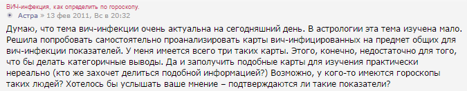
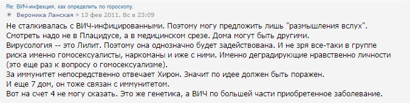

Астрология как сфера околокультурной деятельности человека предлагает помощь в решении ряда житейских трудностей. Так уж устроен человек, что если в астрологическом прогнозе у него сбывается два предложения, то читатель может уверовать и в остальные 10 страниц текста. Но эта «наука» не стоит на месте, и уже появились эксперты-астрологи в области ВИЧ-инфекции…
Астрология как сфера околокультурной деятельности человека предлагает помощь в решении ряда житейских трудностей. Так уж устроен человек, что если в астрологическом прогнозе у него сбывается два предложения, то читатель может уверовать и в остальные 10 страниц текста. Астрологи, будучи часто и доморощенными психологами, могут вполне неплохо существовать и даже зарабатывать, пока по свету бродят одинокие, обиженные люди, пока существует эффект плацебо, пока людям становится легче от того, что на них кто-то обращает внимание. Астрологи, в свою очередь, искренне веря за недостатком образования в свою исключительную стезю, могут перейти некоторые границы. Одно дело писать рандомные предсказания в глянцевые журналы, другое дело браться помогать больным людям. Многие книги посвящены роли астрологии в медицине, что отчасти отражает историю развития науки в прошлом. Однако исключительно редко астрологи берутся за по-настоящему серьёзное заболевание.
За образец медицинской «серьёзности» я рискну взять ВИЧ. И, действительно, оказалось, что очень немногие астрологи работают в этом поле. После экскурсии на форумы астрологов, я понял, в чём дело. Ведь им для составления гороскопа нужны персональные данные пациентов, а ВИЧ-инфицированные защищены законом в этом отношении, и часто обследуются анонимно. Удалось обнаружить лишь нескольких счастливчиков «работающих» с подобным материалом. Приведу типичные мнения на эту тему из форумов астрологов.


Но всё же, хоть и не сразу, удалось отыскать эксперта по вопросам астрологии ВИЧ. На него ссылаются большинство тех, кто ищет информацию по данной проблеме — Ульрих И.В.
Его книга содержит главы, посвящённые астрологическим медицинским аспектам при алкоголизме, сахарном диабете и наркомании. Но венцом, безусловно, является глава о ВИЧ. Автору удалось сделать определённые выводы, основываясь на изучении 12 пациентов, их персональных данных и медицинских фактов. В книге не отрицается инфекционная природа заболевания или его патогенез, но автор раскрывает совершенно новые аспекты заболевания, возможно, пытаясь помочь практикующим врачам.

«Медицинская астрология, владеющая предсказательными методиками, формулами болезней могла бы задолго до инфицирования пациента (буквально с первого дня его рождения) определить склонность к ВИЧ-инфекции у конкретного человека, выделить его в группу риска и соответственно проводить адресную, индивидуальную конкретную работу и профилактику против реальной угрозы развития тяжелейшего, социально опасного заболевания — ВИЧ-инфекции».
Анализируя доступные ему случаи, автор указывает, что Овны имеют большие риски по ВИЧ-инфекции. Это несколько противоречит астрологическим положениям о крепости здоровья Овнов, но автор вносит ряд уточнений, которые, к сожалению, непосвящённому медику неясны: «Опираясь на медицинскую практику, мы можем указать на то, что в целом Овны обладают, как правило, не плохим здоровьем и сохраняют его до старости. Исключение составляют Овны, чье солнце либо сильно повреждено элементами домов болезни (VI, VIII, XII), либо само Солнце является элементом домов болезни. Именно такие Овны имеют проблемы со здоровьем…». Автор пишет о причинах ВИЧ-инфекции: «…следует теснейшая связь этого заболевания в настоящей жизни с предыдущими ближайшими воплощениями. … так или иначе подобные действия (ныне страдающего ВИЧ-инфекцией) привели к тяжелым финансово-материальным последствиям, лишениям, страданиям, потери независимости других людей. А теперь, в этой жизни лишениями и страданиями, но не только финансовыми, а духовными и физическими расплачивается он сам».
Безусловно, отдельной темой мог бы стать вопрос, откуда астролог взял реальные данные пациентов для своих расчётов. Информированы ли были пациенты об этом и передана ли им астрологическая информация. Если всё было в рамках закона, то хочется посоветовать автору в следующий раз провести не ретроспективное, а проспективное исследование пациентов с ВИЧ-инфекцией.
Из текста книги следует, что роль астрологии в профилактике ВИЧ невелика, ибо невозможно повернуть время, и в прошлой жизни не совершать определённых грехов, приведших в нынешней к болезни. Астролог, рассматривая гороскоп пациента (или его медкарту?), может лишь констатировать ВИЧ. Так что остаётся применять астрологию как средства ранней диагностики. В частности, пациентам с определёнными аномалиями в Натальном и Кармическом гороскопах следует заранее приготовиться к ВИЧ и проинформировать своего терапевта о возможном новом случае на его участке. Я вижу также, что выгоду медицинская астрология может представлять для страховых компаний. Они располагают необходимыми данными и могут предвидеть ВИЧ у своих клиентов, прогрессивно повышать плату с учётом будущего дорогостоящего лечения. Военкоматам следует ввести в штат астролога, чтобы исключить из числа призывников ВИЧ-инфицированных в серонегативном периоде. В брачных агентствах следует поставить всех Овнов на особый учёт. В целом, будь я соавтором этой книги, то практической пользы она принесла бы неизмеримо больше. Можно было бы добавить, что анамнез инъекционной наркомании в сочетании с аномалиями гороскопа повышает риск ВИЧ-инфекции. Рекомендовать контрацепцию «пациентам» из группы высокого астрологического риска. Но, главное, но неясной причине автор не даёт самых важных рекомендаций! Ведь если к ВИЧ-инфекции приводят конкретные грехи в прошлой жизни, то очевидна рекомендация хотя бы не совершать указанных преступлений в нынешней — «продуманный крупный обман, махинации, разорение, ограбление, использование служебного положения в таких же целях» — иначе в следующем воплощении грядёт СПИД. Ведёт ли мелкий обман или клептомания к ВИЧ, в книге не сказано, полагаю, на этот счёт у астрологов припасена какая-то другая соответствующая случаю патология.
Если вы практикующий врач, при случае, поинтересуйтесь у своих пациентов, не обращались ли они к медицинским астрологам, и не от них ли пришли к вам?
В.В. Привольнев
P.S.
«Итак, с точки зрения естествознания, астрология — пустоцвет, мыльный пузырь, лишенный рационального содержания. Там, где это возможно, наука создаёт методы прогноза и не окутывает их мистикой. А там, где невозможно, прямо об этом заявляет, не суля пустых надежд, как астрологи. Науке с астрологией не по пути. И если бы астрологи бессовестно не присваивали себе высокую репутацию, заработанную наукой, в частности астрономией, то и не было бы статей, подобных этой, и не обращали бы мы на них особого внимания, не выделяли бы из ряда других проявлений массовой культуры. Но когда диктор телевидения заявляет, что «сегодня по астрологическому календарю будет самый короткий день и самая длинная ночь», а бородатый астролог «назначает» на завтра солнечное затмение, хочется закричать: «Люди, причём же здесь астрология? Это результаты нормальных научных расчетов, сделанных астрономами (покажите мне астролога, который самостоятельно может рассчитать хотя бы продолжительность дня, не говоря уже об обстоятельствах солнечного затмения!)».
http://www.nkj.ru/archive/articles/5249/
С.н.с. Государственного астрономического института В.Г. Сурдин